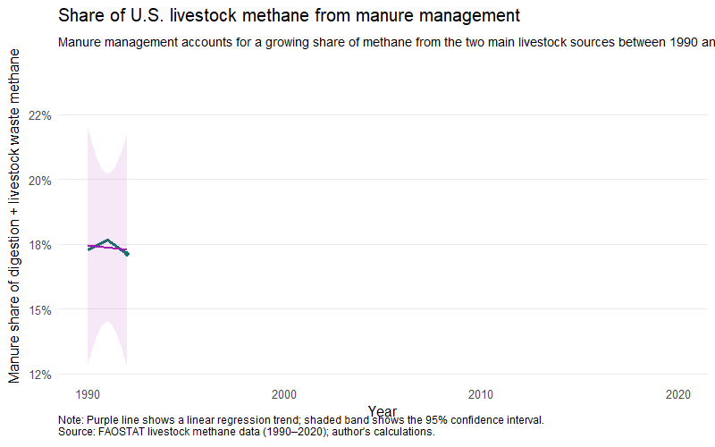
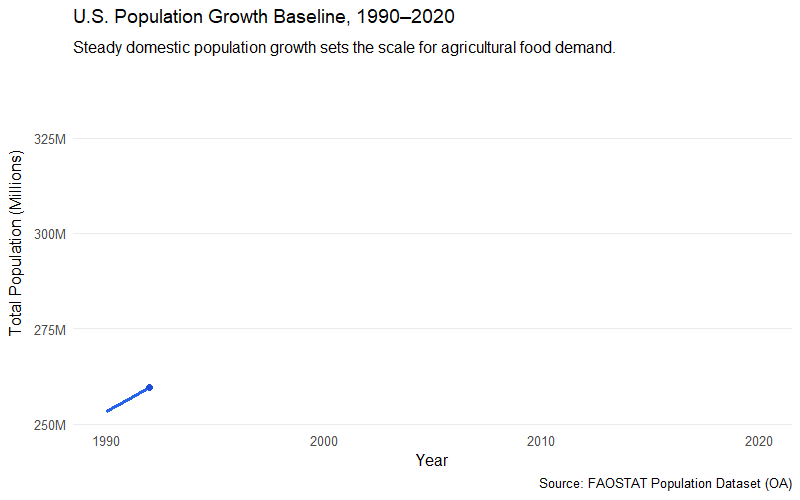
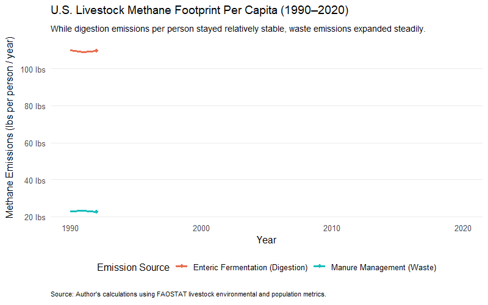
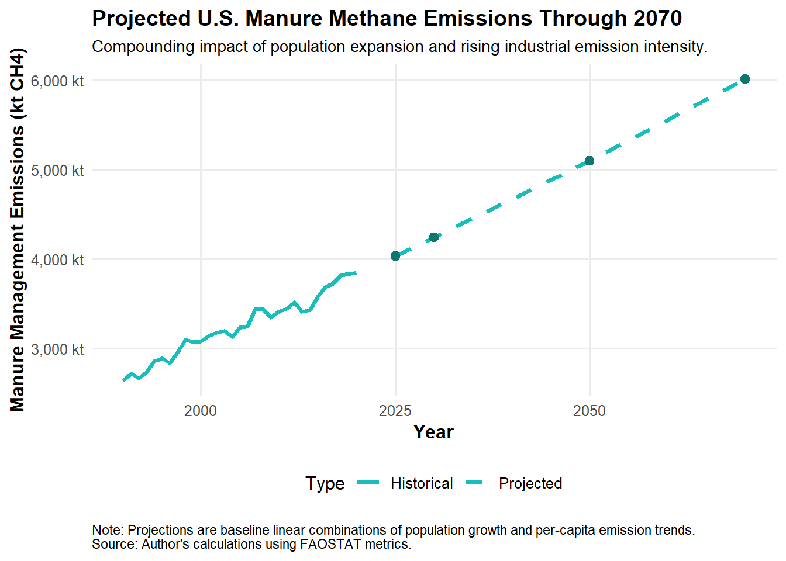

Factory Farming and Methane Emissions - Individual Report
Author
miggonzalz
How has the balance between methane from enteric fermentation and manure management changed over time in U.S. livestock production, and what does that suggest about industrial livestock systems?
1 Introduction
This report examines how methane (CH_4) emissions from U.S. livestock production changed between 1990 and 2020 and uses those trends to project emissions through 2070. Methane is a highly potent greenhouse gas, trapping significantly more heat than carbon dioxide (CO_2) over a short time horizon, so identifying its agricultural sources is important for climate change analysis. Many studies focus only on total methane emissions from farming or assume that emissions rise automatically as the human population grows. This project shows that the underlying pattern is more complex.
By combining historical emissions data with U.S. population records from FAOSTAT, this analysis separates livestock methane into its two main sources: enteric fermentation (animal digestion) and manure management (waste handling). When the data are analyzed this way, a clear divergence emerges. Enteric fermentation emissions per person have remained relatively stable or declined slightly over the last few decades, largely because farming has become more efficient. In contrast, manure emissions per person have increased steadily. This means the increase is not driven solely by population growth; it also reflects structural changes in how livestock waste is managed under large-scale, industrial farming systems. The report concludes with future projections showing that, if current trends continue, the combination of a growing population and rising waste emissions will create a substantial long-term environmental challenge.
2 Data Gathering and Enviornmental Set up
Raw datasets from large international databases are typically optimized for storage efficiency rather than rapid analysis, so the files required preprocessing. For example, some column names contained spaces instead of periods, column types were inconsistent, and the data was stored in a long format in which multiple rows for different variables were stacked under the same year. The goal was to standardize column headers, ensure that numeric fields and years were formatted correctly, and isolate the exact rows needed for analysis.
A check of the raw population file showed that it did not contain a single total population value per year. Instead, it included subgroups such as males, females, rural population, and urban population. If these rows are not filtered out, R will sum them together and substantially inflate the true population during the merge. To avoid this, I filtered the data strictly for “United States of America” and “Total Population – Both sexes.” In addition, because FAOSTAT records population numbers in thousands, I multiplied that column by 1,000 so it represents actual person counts.
After filtering the methane data to the key sources (enteric fermentation, manure management, and livestock total), I joined the two tables using the Year column. Finally, I used the combined data to calculate a new metric:kilograms (kg) of methane produced per person per year for each source.
3 FAOSTAT Methane Download
Code
library(FAOSTAT) library(dplyr)library(readr)library(tidyr)# Where you want to save the CSVfile_destination <-file.path("data", "group_project", "faostat", "methane_us_1990plus.csv")# 1) Check if the CSV already existsif (file.exists(file_destination)) {message("CSV already exists: skipping API pull.") df <-read_csv(file_destination, show_col_types =FALSE)} else {message("CSV not found: running API pull...")# Run your FAOSTAT pull; example with read_fao (adjust codes as needed) methane_us_1990plus <-read_fao(area_codes ="840", # USAelement_codes =c("72441", "72254", "72256"),item_codes ="F1757",year_codes =as.character(1990:2024),dataset ="GLE" ) %>%as_tibble()# Write to disk so next time it will be skippedwrite_csv(methane_us_1990plus, file_destination) df <- methane_us_1990plus}# 2) Basic sanity checkmessage(paste("Loaded", nrow(df), "rows from", file_destination))# from the FAOSTAT website and saved as methane_us_1990plus.csv# element_codes: 72441 = Enteric fermentation, 72254 = Manure management, 72256 = Livestock total# item_codes: F1757 = Livestock
This section begins with the raw FAOSTAT methane emissions data for the United States. I extracted U.S. observations for the years 1990 through 2020 and saved the subset locally so the API does not need to be called repeatedly. Storing a fixed local copy makes the workflow easier to manage and keeps all inputs in a single location.
4 FAOSTAT Population Download
Code
# Define the local path for the population file from your directory setuppop_path <-file.path("data", "group_project", "faostat", "FAOSTAT_population.csv")# Read the raw local file into memory first so R can filter itpop_raw <-read_csv(pop_path, show_col_types =FALSE)# Rename columns to use periods instead of spaces (easier for R)pop_clean <- pop_raw %>%rename_with(~gsub(" ", ".", .x)) %>%# Filter strictly for the overall total population row per yearfilter( Area =="United States of America", Element =="Total Population - Both sexes" ) %>%mutate(Year =as.integer(Year),# FAOSTAT population is in thousands, so multiply by 1000 for actual countPopulation =as.numeric(Value) *1000 ) %>%# Match the 1990-2020 timeframe of your methane datafilter(Year >=1990& Year <=2020) %>%select(Year, Population)# Re-run your summary statistics to verifysummary(pop_clean$Population)
Min. 1st Qu. Median Mean 3rd Qu. Max.
253373387 274793673 295716664 296617039 318613057 339436159
Code
# Note: Population data was downloaded from the FAOSTAT website as an Excel file# due to API connection issues and saved as FAOSTAT_population.csv.
This section reads the local population dataset obtained from FAOSTAT. Due to difficulties accessing the FAOSTAT API directly, I downloaded the population data from the FAOSTAT website as an Excel file and imported it into R. This approach simplified data ingestion and avoided repeated API connection issues.
Because the raw file includes additional rows that split population by gender and by rural or urban status, I filtered the data down to the overall total for both sexes combined. I also multiplied the value column by 1,000 to obtain the actual number of people and restricted the years to 1990 through 2020 so it aligns exactly with the methane dataset.
I cleaned the dataset by ensuring that the Year and emissions columns were stored in the correct format. I then filtered the data to the methane sources relevant for the analysis: enteric fermentation, manure management, and total livestock methane. Because the original file was structured for storage rather than analysis, I reshaped it so that each year had its own row with separate columns for each source.
The result was a table ready for analysis. From there, it became straightforward to compare the two methane sources and examine how they changed over time.
This chart compares methane from enteric fermentation and livestock waste across the study period. The main pattern is clear: enteric fermentation remains higher throughout the period, while manure management increases more steadily. This indicates that the composition of emissions changed, even though the overall total did not shift dramatically at first glance.
This chart is important because it shows both sources together. If you only look at totals, you might miss the fact that one source is becoming more important while the other remains relatively stable. Here, the manure line rises slowly but consistently, which helps explain why manure becomes a larger share of the overall methane picture over time.
The animated version makes this trend easier to see because the change is shown year by year. It gives the chart a sense of movement and helps show that the increase in manure methane was gradual rather than sudden.
This section examines the share of methane coming from manure management relative to the combined total from manure and enteric fermentation. Using a share instead of raw numbers helps show how the balance between the two sources changed over time. It answers a slightly different question: not just how much methane was produced, but where that methane was coming from.
The regression shows a positive trend. In plain terms, manure management made up a larger share of the total as the years progressed. The Year coefficient is positive and statistically significant, which aligns with the chart. The high R-squared also indicates that the model fits the data well and captures the pattern clearly.
The cleaned table makes these results easier to read. Instead of looking through the full regression output, the table extracts the key numbers and presents them in a more readable format. For someone reading the report, the main takeaway is simple: the manure share increased over time.
Code
knitr::opts_chunk$set(dev ="png")options(bitmapType ="cairo")library(ggplot2)library(scales)library(gganimate)p_balance <-ggplot(balance_df, aes(x = Year, y = manure_share)) +geom_line(color ="#0F766E", linewidth =1.2) +geom_point(color ="#0F766E", size =1.8) +geom_smooth(method ="lm",se =TRUE,color ="#A21CAF",fill ="#A21CAF",alpha =0.10,linewidth =1 ) +scale_y_continuous(labels =percent_format(accuracy =1) ) +labs(title ="Share of U.S. livestock methane from manure management",subtitle ="Manure management accounts for a growing share of methane from the two main livestock sources between 1990 and 2020.",x ="Year",y ="Manure share of digestion + livestock waste methane",caption =paste("Note: Purple line shows a linear regression trend; shaded band shows the 95% confidence interval.","Source: FAOSTAT livestock methane data (1990–2020); author's calculations.",sep ="\n" ) ) +theme_minimal(base_size =12) +theme(plot.title =element_text(face ="bold", size =15),plot.subtitle =element_text(size =10.5),axis.title =element_text(face ="bold"),panel.grid.minor =element_blank(),panel.grid.major.x =element_blank(),plot.caption =element_text(size =9, hjust =0) ) +transition_reveal(Year)animate( p_balance,fps =2,duration =10,end_pause =12,width =800,height =500,units ="px",res =96)

Code
anim_save("manure_share_trend.gif")
This chart shows the same idea visually. The upward line makes it clear that manure management’s share of methane from the two sources increased steadily over the years. The fitted regression line confirms that the pattern is not just random noise from year to year.
This chart is useful because it connects the statistical result to something visual and intuitive. You do not need to know much about regression to see the general direction. The line moves upward, so the share is rising. That is the main point the chart is trying to communicate.
The confidence band around the trend line also matters because it shows that the estimate has some uncertainty. Even so, the overall direction is clear: manure management has taken up a larger share over time, and the trend is consistent across the full period.
Code
library(dplyr)library(tidyr)library(ggplot2)# Historical data only through 2020hist_df <- usa_summary %>%filter(Year <=2020) %>%select(Year, digestion_methane, waste_methane)# Fit linear trendsmod_dig <-lm(digestion_methane ~ Year, data = hist_df)mod_waste <-lm(waste_methane ~ Year, data = hist_df)# Forecast yearsforecast_years <-tibble(Year =c(2025, 2030, 2050, 2070))# Forecast valuesforecast_df <- forecast_years %>%mutate(digestion_forecast =predict(mod_dig, newdata = forecast_years),waste_forecast =predict(mod_waste, newdata = forecast_years),total_forecast = digestion_forecast + waste_forecast,manure_share_forecast = waste_forecast / total_forecast,enteric_share_forecast = digestion_forecast / total_forecast )# Historical data in long formathistorical_long <- hist_df %>%pivot_longer(cols =c(digestion_methane, waste_methane),names_to ="source",values_to ="methane" ) %>%mutate(source =recode( source,digestion_methane ="Digestion",waste_methane ="Livestock waste" ),type ="Historical" )# Forecast data in long formatforecast_long <- forecast_df %>%select(Year, digestion_forecast, waste_forecast) %>%pivot_longer(cols =c(digestion_forecast, waste_forecast),names_to ="source",values_to ="methane" ) %>%mutate(source =recode( source,digestion_forecast ="Digestion",waste_forecast ="Livestock waste" ),type ="Forecast" )# Combined data for plottingplot_all <-bind_rows(historical_long, forecast_long)#plot_all
Code
knitr::opts_chunk$set(dev ="png")options(bitmapType ="cairo")library(gganimate)p_forecast <-ggplot( plot_all,aes(x = Year, y = methane, color = source, group =interaction(source, type))) +geom_line(aes(linetype = type), linewidth =1.2) +geom_point(data = forecast_long,size =2 ) +scale_color_manual(values =c("Digestion"="#E76F51", "Livestock waste"="#17BEBB") ) +scale_linetype_manual(values =c("Historical"="solid", "Forecast"="dashed") ) +labs(title ="Historical and projected U.S. livestock methane",subtitle ="Year: {frame_along}",x ="Year",y ="Methane emissions (kt CH4)",color ="Source",linetype ="Series",caption =paste("Note: Forecast values are simple linear trend projections based on 1990–2020 data and should not be interpreted as exact predictions.","Source: FAOSTAT livestock methane data; author's calculations.",sep ="\n" ) ) +theme_minimal(base_size =12) +theme(plot.title =element_text(face ="bold", size =15),plot.subtitle =element_text(size =11),axis.title =element_text(face ="bold"),legend.position ="right",panel.grid.minor =element_blank(),plot.caption =element_text(size =9, hjust =0) ) +transition_reveal(Year)animate( p_forecast,fps =2,duration =12,end_pause =12,width =800,height =500,units ="px",res =96)
The summary table shows that the United States added over 86 million people between 1990 and 2020. This represents a large increase in the total number of consumers entering the domestic market, which naturally creates a continuous baseline demand for meat, dairy, and other agricultural products..
Code
library(ggplot2)library(scales)library(gganimate)p_pop_trend <-ggplot(pop_clean, aes(x = Year, y = Population)) +geom_line(color ="#2563EB", linewidth =1.2) +geom_point(color ="#1D4ED8", size =2) +scale_y_continuous(labels =label_comma(scale =1e-6, suffix ="M")) +labs(title ="U.S. Population Growth Baseline, 1990–2020",subtitle ="Steady domestic population growth sets the scale for agricultural food demand.",x ="Year",y ="Total Population (Millions)",caption ="Source: FAOSTAT Population Dataset (OA)" ) +theme_minimal(base_size =12) +theme(plot.title =element_text(face ="bold", size =14),panel.grid.minor =element_blank(),panel.grid.major.x =element_blank() ) +transition_reveal(Year)animate( p_pop_trend,fps =2,duration =10,end_pause =12,width =800,height =500,units ="px",res =96)

Code
anim_save("us_population_trend.gif")
The growth path follows a nearly straight line. If livestock emissions were strictly tied to population growth, we would expect to see methane emissions move upward in a matching, steady linear pattern.
To calculate the annual growth rate, the code compares each year against the previous year. First, it takes the current year’s population and subtracts the population from the previous year, which gives the net number of new people added during that single year. Then, it divides that number by the previous year’s total population. This converts the raw number of new residents into a percentage rate, showing how fast the country expanded relative to its baseline size.
The key takeaway is that the annual growth rate has been slowing down consistently, dropping from around 1.3% in the early 1990s to well under 0.6% by 2020. This calculation is crucial for the analysis because it shows the actual velocity of population expansion. Since the percentage rate of human population growth is decelerating over time, any steady acceleration in livestock waste emissions cannot be attributed simply to population pressure. Instead, it must be driven by operational shifts within farming infrastructure..
7 Unifiing the sources
Now that the individual deep dives into each FAOSTAT table are complete, the two datasets are analyzed together. I combined them using an inner join on the Year column so that the final emissions footprint per person could be examined.
To make the resulting numbers more intuitive, I converted methane from kilotonnes into pounds. First, I multiplied the raw values by 1,000,000 to convert kilotonnes to kilograms, then multiplied by 2.20462 to convert kilograms to pounds. Finally, I divided that total by the human population count for each matching year. This calculation moves away from abstract database numbers and provides a practical baseline metric: livestock methane emissions in (lb) per American per year.
Code
# Combine the datasets using an inner join and convert to pounds (lbs)usa_combined <- usa_summary %>%inner_join(pop_clean, by ="Year") %>%mutate(# Formula: (kt * 1,000,000 * 2.20462) / Population = lbs CH4 per personenteric_per_capita = (digestion_methane *1000000*2.20462) / Population,waste_per_capita = (waste_methane *1000000*2.20462) / Population,total_per_capita = (total_methane *1000000*2.20462) / Population )# Verify the merged output columns#head(usa_combined %>% select(Year, Population, enteric_per_capita, waste_per_capita, total_per_capita))
Code
library(ggplot2)library(dplyr)library(tidyr)library(scales)library(gganimate)# Reshape the per-capita metrics so ggplot can map them as distinct colored linesplot_per_capita <- usa_combined %>%select(Year, enteric_per_capita, waste_per_capita) %>%pivot_longer(cols =-Year,names_to ="Emission_Type",values_to ="lbs_per_person"# Updated to reflect pounds ) %>%mutate(Emission_Type =recode( Emission_Type,enteric_per_capita ="Enteric Fermentation (Digestion)",waste_per_capita ="Manure Management (Waste)" ) )# Create the visualizationp_per_capita <-ggplot(plot_per_capita, aes(x = Year, y = lbs_per_person, color = Emission_Type, group = Emission_Type)) +geom_line(linewidth =1.3) +geom_point(size =1.8) +scale_color_manual(values =c("Enteric Fermentation (Digestion)"="#E76F51","Manure Management (Waste)"="#17BEBB" ) ) +scale_y_continuous(labels =label_comma(suffix =" lbs")) +# Updated axis unitslabs(title ="U.S. Livestock Methane Footprint Per Capita (1990–2020)",subtitle ="While digestion emissions per person stayed relatively stable, waste emissions expanded steadily.",x ="Year",y ="Methane Emissions (lbs per person / year)", # Updated axis titlecolor ="Emission Source",caption ="Source: Author's calculations using FAOSTAT livestock environmental and population metrics." ) +theme_minimal(base_size =12) +theme(plot.title =element_text(face ="bold", size =14),plot.subtitle =element_text(size =10.5),axis.title =element_text(face ="bold"),legend.position ="bottom",panel.grid.minor =element_blank(),panel.grid.major.x =element_blank(),plot.caption =element_text(size =8.5, hjust =0, margin =margin(t =15)) ) +transition_reveal(Year)animate( p_per_capita,fps =2,duration =10,end_pause =12,width =800,height =500,units ="px",res =96)

Code
anim_save("livestock_per_capita_trends.gif")
The animated chart brings the core finding of the project into clear view. Enteric fermentation emissions per person declined over the years, starting at around 110 (lb) per person in 1990 and falling to about 97 (lb) by 2020. This indicates that the livestock sector became more efficient per animal, using improved feeding regimens and breeding choices to keep the individual animal footprint in check.
In contrast, waste emissions per person increased steadily, climbing from roughly 23 (lb) to over 30 (lb) per person. Because this calculation explicitly factors in population size, it provides clear evidence that the increase is not just a byproduct of feeding a larger nation. The food production system itself became structurally more waste-heavy over time, pointing directly to the impact of industrial factory farming methods.
8 Predictive Modeling and Multi-Decade Projections
To understand where U.S. livestock emissions might be headed in the future, this section takes the historical trends and models them forward over the next several decades. By examining how population growth and shifting waste patterns interact, the analysis estimates what the long-term environmental footprint of these farming systems might look like.
To see where these patterns are heading over the long term, the analysis extends out to 2070. Instead of drawing a simple straight line forward on raw emissions totals, this approach builds a composite prediction model by tracking the underlying components separately.
The code fits two independent linear regression models using the clean historical baseline: one that tracks population growth over time, and another that tracks the rising waste footprint per person (measured in pounds). By modeling them as separate paths, the analysis projects what human population and per-capita emission rates will be for the key target milestone years.
Code
library(dplyr)library(tidyr)# 1. Fit individual linear models based on our historical baseline data (1990-2020)model_pop <-lm(Population ~ Year, data = usa_combined)model_waste <-lm(waste_per_capita ~ Year, data = usa_combined)# 2. Setup the future milestone years we want to targetforecast_years <-tibble(Year =c(2025, 2030, 2050, 2070))# 3. Generate predictions and convert the final total back to kilotonnes (kt)projections <- forecast_years %>%mutate(pred_population =predict(model_pop, newdata = forecast_years),pred_waste_capita =predict(model_waste, newdata = forecast_years),# Formula: (Population * lbs_per_capita) / (1,000,000 * 2.20462) to get back to kt CH4pred_total_waste = (pred_population * pred_waste_capita) / (1000000*2.20462) )
To compute the total future impact, the model multiplies the projected population by the projected pounds of waste per person for each milestone year. Because global databases track emissions in kilotonnes, the code divides that total by 1,000,000 and then by 2.20462. This reverses the earlier conversion, moving the data out of pounds and returning it to standard kilotonnes (kt) so it can be plotted alongside the historical records.
Code
# Extract historical series for bindinghist_series <- usa_combined %>%select(Year, Population, waste_methane) %>%mutate(Type ="Historical")# Format projected series for bindingproj_series <- projections %>%select(Year, Population = pred_population, waste_methane = pred_total_waste) %>%mutate(Type ="Projected")# Merge into a single visualization data frametimeline_df <-bind_rows(hist_series, proj_series)# Plot the Compounding Trendp_projection <-ggplot(timeline_df, aes(x = Year, y = waste_methane, group = Type)) +geom_line(aes(linetype = Type), color ="#17BEBB", linewidth =1.3) +geom_point(data =filter(timeline_df, Type =="Projected"), color ="#0F766E", size =2.5) +scale_linetype_manual(values =c("Historical"="solid", "Projected"="dashed")) +scale_y_continuous(labels =label_comma(suffix =" kt")) +labs(title ="Projected U.S. Manure Methane Emissions Through 2070",subtitle ="Compounding impact of population expansion and rising industrial emission intensity.",x ="Year",y ="Manure Management Emissions (kt CH4)",caption =paste("Note: Projections are baseline linear combinations of population growth and per-capita emission trends.","Source: Author's calculations using FAOSTAT metrics.",sep ="\n" ) ) +theme_minimal(base_size =12) +theme(plot.title =element_text(face ="bold", size =14),plot.subtitle =element_text(size =10.5),axis.title =element_text(face ="bold"),legend.position ="bottom",panel.grid.minor =element_blank(),plot.caption =element_text(size =8.5, hjust =0, margin =margin(t =12)) )print(p_projection)

The visualization shows a clear compounding effect that occurs when population growth and rising per-capita emission intensity are modeled together. While the historical data shows a steady upward trajectory from 1990 through 2020, the projected baseline estimates that U.S. manure management emissions will surpass 4,000 (kt) by 2025 and ultimately climb past 6,000 (kt) by 2070. Because this model accounts for both an expanding population and an increasing waste footprint per person, the long-term trend line shows acceleration rather than a simple linear trajectory. These projections demonstrate that without significant operational or technological shifts in how industrial livestock waste is managed, manure will become a progressively dominant driver of the country’s agricultural greenhouse gas footprint over the next several decades.
9 CONCLUSION
In summary, this analysis reveals a critical structural shift within U.S. livestock production over the past three decades: while enteric fermentation emissions have steadily decoupled from population growth due to efficiency gains, industrial manure management has emerged as an accelerating environmental driver. Converting the primary metrics into pounds per capita explicitly shows that the growing methane footprint is not merely a passive consequence of feeding a larger human population, but rather a direct reflection of structural shifts toward high-density factory farming infrastructure.
As the linear models project total manure emissions to climb past 6,000 (kt) by 2070, the compounding pressure of a growing population and increasing per-capita waste intensity presents a significant multi-decade challenge. These findings indicate that, if the agricultural sector is to meet near-term climate targets, policy and operational changes must focus on systemic reform in industrial waste handling and the adoption of alternative waste management technologies.
NoteAI Usage Statement
Perplexity was used to help write the code in this project, but all non-code text was generated without the use of any Generative AI tools. Additionally, Perplexity was used to provide additional background information on the topic and to brainstorm ideas for the final open-ended prompt.